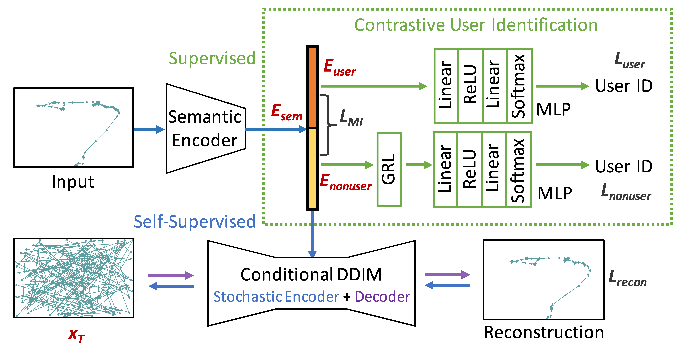

DisMouse: Disentangling Information from Mouse Movement Data
Guanhua Zhang, Zhiming Hu, Andreas Bulling
Proceedings of the ACM Symposium on User Interface Software and Technology (UIST), 2024: 1-13.

Abstract
Mouse movement data contain rich information about users, performed tasks, and user interfaces, but separating the respective components remains challenging and unexplored. As a first step to address this challenge, we propose DisMouse – the first method to disentangle user-specific and user-independent information and stochastic variations from mouse movement data. At the core of our method is an autoencoder trained in a semi-supervised fashion, consisting of a self-supervised denoising diffusion process and a supervised contrastive user identification module. Through evaluations on three datasets, we show that DisMouse 1) captures complementary information of mouse input, hence providing an interpretable framework for modelling mouse movements, 2) can be used to produce refined features, thus enabling various applications such as personalised and variable mouse data generation, and 3) generalises across different datasets. Taken together, our results underline the significant potential of disentangled representation learning for explainable, controllable, and generalised mouse behaviour modelling.Links
BibTeX
@inproceedings{zhang24dismouse,
title = {DisMouse: Disentangling Information from Mouse Movement Data},
author = {Zhang, Guanhua and Hu, Zhiming and Bulling, Andreas},
year = {2024},
pages = {1--13},
booktitle = {Proceedings of the ACM Symposium on User Interface Software and Technology}}